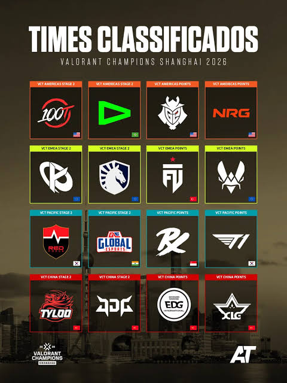

São 16 equipes, quatro de cada região. Os dois finalistas do
Stage 2 de cada liga garantiram vaga direta; as outras duas vagas
foram para quem somou mais Championship Points na temporada.

Figura 1 – Os 16 times classificados.
Classificados por região
Times classificados e forma de classificação
Região
Campeão do Stage 2
Vice do Stage 2
Pontos #1
Pontos #2
Américas
100 Thieves
LOUD
NRG
G2 Esports
EMEA
Karmine Corp
Team Liquid
FUT Esports
Team Vitality
Pacífico
Global Esports
Nongshim RedForce
Paper Rex
T1
China
TYLOO
JD Gaming
EDward Gaming
Xi Lai Gaming
Torneios internacionais de 2026
Campeões, vices e MVPs da temporada 2026 do VCT
Torneio
Campeão
Vice-campeão
MVP
Masters Santiago
Nongshim RedForce
Paper Rex
Dambi
Masters Londres
Leviatán
Paper Rex
Neon
Champions Xangai
Em andamento – grande final em
Grupos e primeiros resultados
Resultados atualizados até 28/09/2026.
Grupo A
100 Thieves, T1, JD Gaming e FUT Esports
Abertura: 100 Thieves 2 x 0 T1
Abertura: JD Gaming 0 x 2 FUT Esports
Grupo B
Global Esports, Team Vitality, LOUD e EDward Gaming
Abertura: Global Esports 1 x 2 Team Vitality
Abertura: LOUD 2 x 0 EDward Gaming
Grupo C
Team Liquid, Paper Rex, TYLOO e G2 Esports
Abertura: Team Liquid 1 x 2 Paper Rex
Abertura: TYLOO 0 x 2 G2 Esports
Grupo D
Nongshim RedForce, NRG, Karmine Corp e Xi Lai Gaming